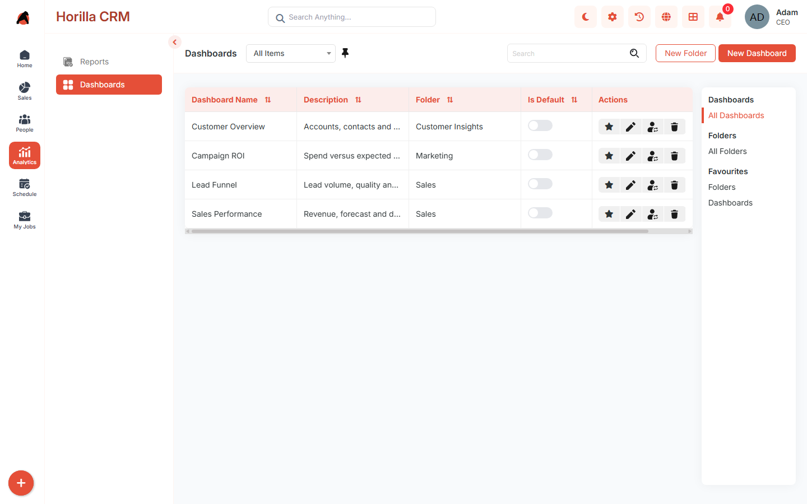
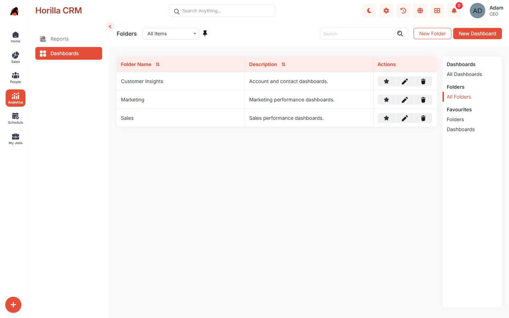
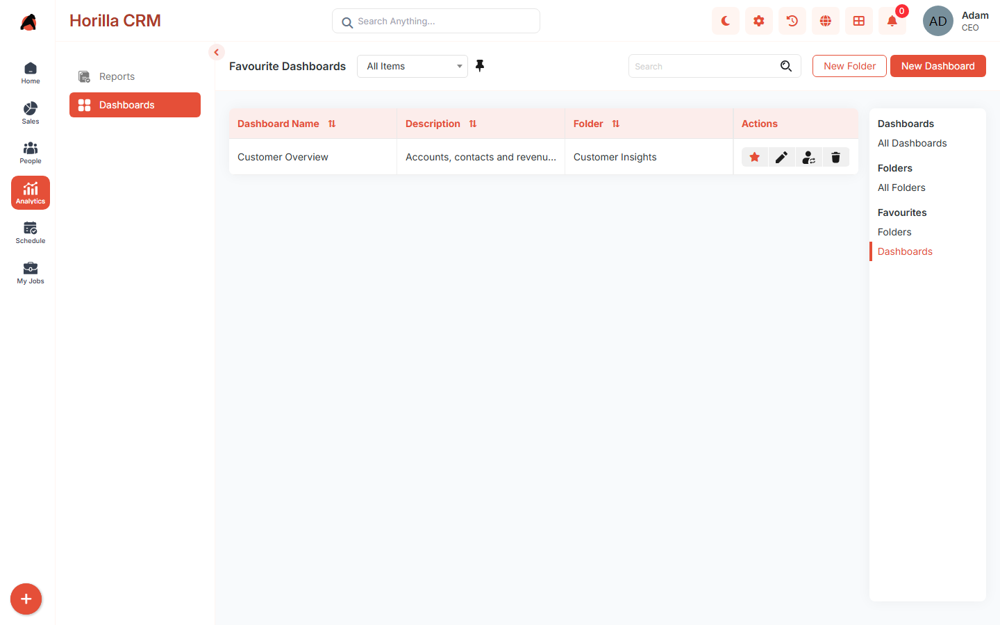
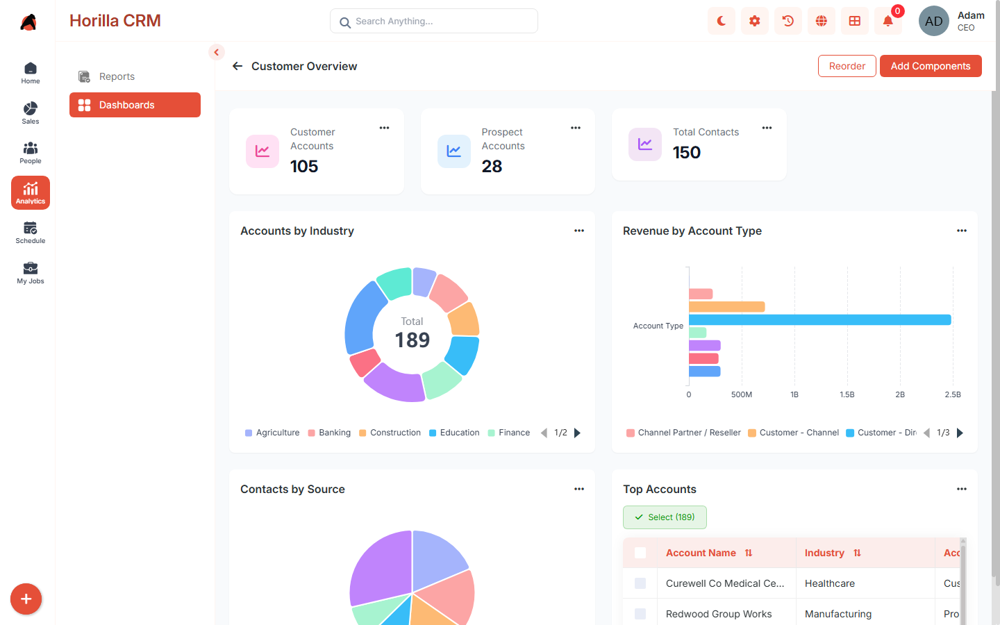
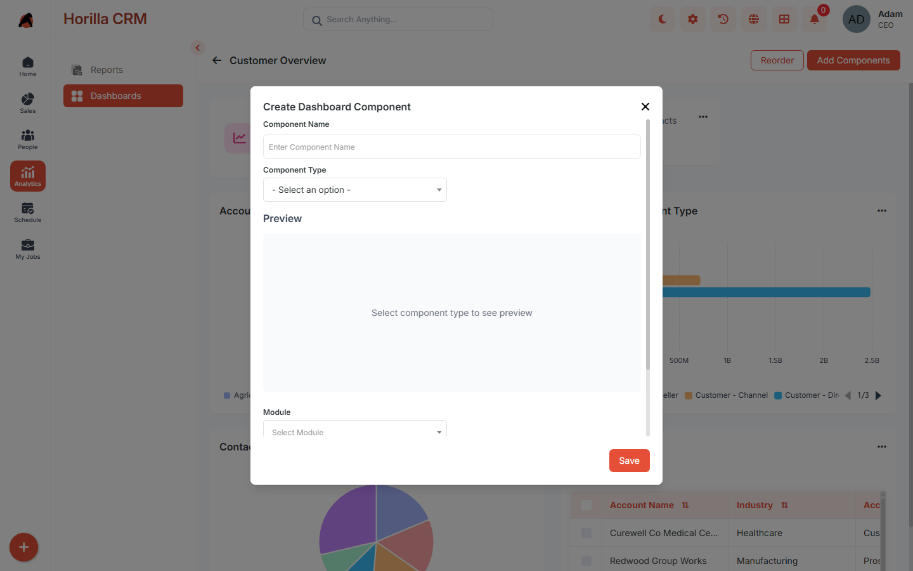
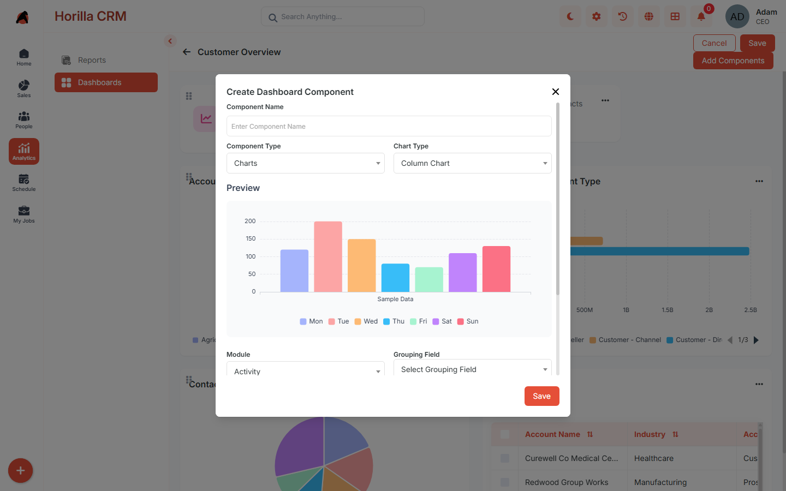
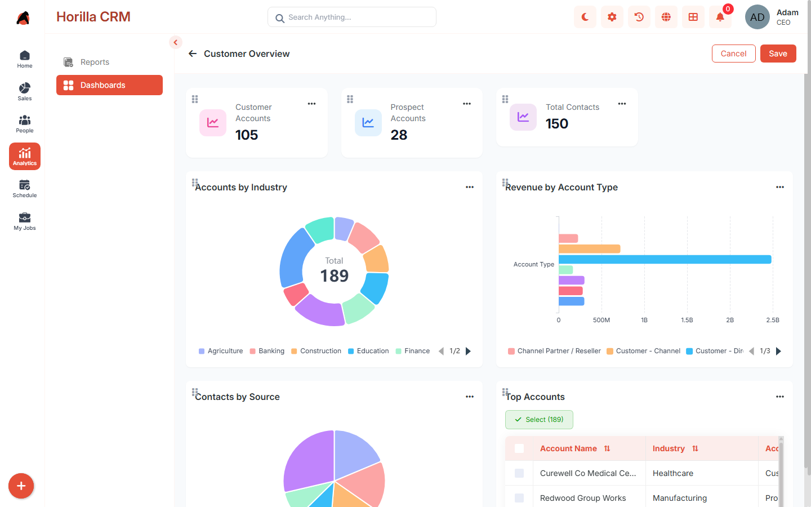
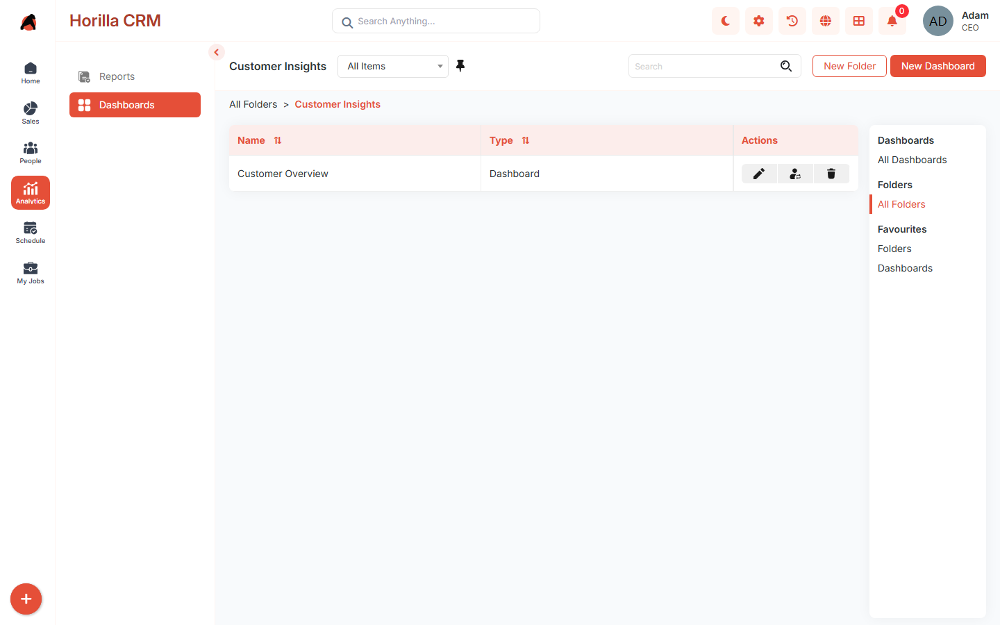
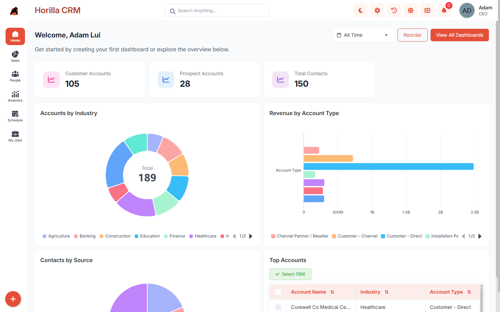
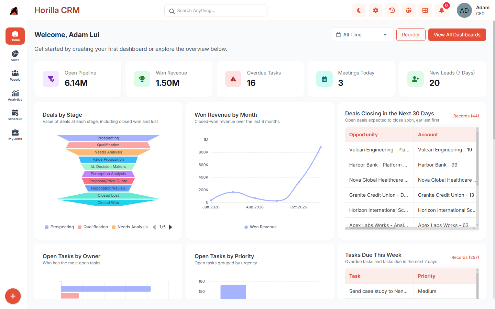

Introduction
The Dashboard & Home module is a dashboard and home page system for visualising CRM metrics. It provides customisable dashboards, a hierarchical way of organising them, personalised home pages, date filtering and export options.
Key Features and Functionalities
1.1 Dashboard Management
Purpose: create, organise and manage multiple dashboards.

- Create multiple dashboards.
- Give each dashboard a name and a description.
- Select a default dashboard.
- Assign a dashboard owner, with view-only or edit permissions.
- Navigate from the list into a dashboard's detail view.
1.2 Folder Organization System
Purpose: give dashboards a hierarchical structure.

- Create multiple folders.
- Give each folder a name and a description.
- Nest folders inside one another, for example Main Folder > Sales > Q1 Reports.
- Open a folder detail view.
- Assign dashboards to folders.
1.3 Favorites Management
Purpose: reach frequently used dashboards and folders quickly.

- Mark any dashboard or folder as a favourite.
- Favourites are available for quick access in the sidebar.
- Star icons act as visual favourite indicators.
1.4 Dashboard Detail View & Interaction
Purpose: work interactively with a dashboard and its components.

- The dashboard is displayed interactively.
- Add Components button.
- Reorder components by drag and drop.
-
Component-specific actions:
- Export chart components as PNG or PDF.
- Export table components as CSV, Excel or PDF.
- Update components.
- Delete components.
- Copy a component to another dashboard.
1.5 Dashboard Components & Widgets
Purpose: offer a range of component types for visualising data.

Available component types
- Charts — bar, line, pie and others.
- Table Data.
- KPI Widgets.
Component configuration fields
- Component Name
- Module Selection
- Component Type
- Metric Field Selection: Count, Sum, Average, Min, Max
- Grouping Field (X-Axis)
- Secondary Grouping
- Y-Axis Metric
- Table Columns
- KPI Icon
- Condition-Based Filtering
1.6 Component Preview & Management
Purpose: preview and manage dashboard components.
- Components are previewed in real time.

- Components can be reordered.
- KPIs are reordered separately.
- The chosen order persists, saved per user and per dashboard.
- The layout can be reset, which reverts to the system default order.

1.7 Navigation & Folder Hierarchy
Purpose: make moving through the dashboard structure intuitive.

- Breadcrumb navigation.
- Sidebar navigation for All Dashboards, All Folders and Favorites (both folders and dashboards).
- A hierarchical folder view.
- Quick navigation actions.
1.8 Report & Chart View Integration
Add Report as Component
- Saved reports that include a chart can be added as a dashboard component from the Reports detail view.
- The chart type, grouping and secondary grouping are mapped across automatically.
Add Chart View as Component
- Every CRM module includes a Chart View that can be pinned to a dashboard.
- The module and grouping configuration are saved at the moment of pinning, and the chart then renders live data.
1.9 Home Page Configuration
Purpose: provide personalised home page experiences.
- A default dashboard can act as the home page.

- The system default home page shows Open Pipeline, Won Revenue, Overdue Tasks, Meetings Today and New Leads, then the stage funnel, won revenue by month, deals closing soon, open tasks and tasks due this week.

- The default home layout ordering is saved per user.
- The default home layout can be reset.
- The home page loads dynamically.
- Configuration is user-specific.
-
Date range filtering:
- Presets: Created Today, Created Yesterday, Created This Week and Created This Month.
- A custom date range selected with a date picker.
- All Time.
- The chosen range applies across the whole dashboard.
Benefits
- Centralised business intelligence.
- Flexible organisation.
- A personalised experience.
- Real-time data visualisation.
- 14 chart types.
- Scalable dashboard management.
- Enhanced productivity.
- Advanced analytics: aggregation, secondary grouping and multi-condition filtering.
- Report integration.
- A user-friendly interface.
- Data export to PNG, PDF, CSV and Excel.
- Collaborative dashboard sharing.